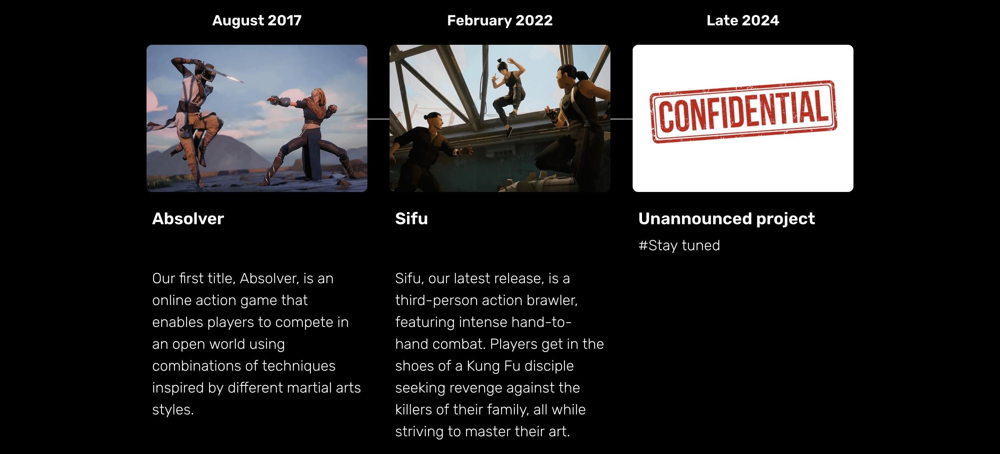

Как-же плохо когда у нас больше нет инсайдера... Cheezmancer возвращайся пж!))) Но благо на реддите нашёлся другой челик который вновь посмотрел торговые марки, и теперь мы знаем как будет называться новая игра! Спасибо Festivy
Игра будет называться Rematch.
{kind=link}
Вот ссылка на саму марку. И вот что интересного я заметил:
- К марке прикреплено изображение, так-же как и с Absolver'ом, а значит скорее всего это логотип новой игры.
- В отличие от Absolver и Sifu, Rematch зарегистрирован не в Европейском союзе, а во Франции (Так-же как и название их студии) - вполне возможно что это сделали для получения финансирования от правительства Франции, помню слышал какую-то новость что Франция будет поддерживать геймдев, но не смог найти эту новость, так-что этот вывод не подтверждён))
- Что касается будет ли это Absolver 2? То скорее всего нет, хоть Rematch и переводиться как реванш, и назвать игру Absolver: Rematch, было-бы хорошим решением, но поскольку это отдельная торговая марка, скорее всего к Абзу она не имеет ни какого отношения.
Так-же известно что игра скорее всего уже почти готова, поскольку недавно SloClap начали приглашать геймеров из Франции приехать и протестировать игру.
Any Parisian gamers around?
— sloclap (@sloclap) 10 сентября 2024 г.
Nous cherchons des gens pour venir tester et donner leur avis sur notre prochain jeu, dans nos locaux à Paris.
N'hésitez pas à vous inscrire dès maintenant via le formulaire ci-dessous et nous prendrons contact avec vous !https://t.co/kRocf7lXacЕсли вы видите этот текст значит Твитер по какой-то причине не доступен
Есть ли здесь парижские геймеры?
Мы ищем людей, которые придут, протестируют и выскажут свое мнение о нашей следующей игре в наших помещениях в Париже.
Не стесняйтесь зарегистрироваться сейчас, используя форму ниже, и мы свяжемся с вами!
И напоследок небольшие мысли про удаление анонса Remacth на сайте SloClap.
{kind=link}
Скорее всего выход Rematch планировался в конце 24-го года, но к этому времени они скорее всего успеют его только официально анонсировать, из-за чего и удалили этот блок. Так-что скорее всего игра выйдет зимой или весной 25-го года. (учитывая ещё то, что игра уже тестируется)